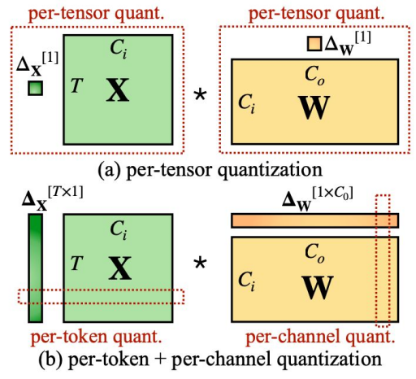

CUDA MODE Lecture 7: Advanced Quantization
notes
cuda
Lecture #7 discusses GPU quantization techniques in PyTorch, focusing on performance optimizations using Triton and CUDA kernels for dynamic and weight-only quantization, including challenges and future directions.
This post is part of the following series:
- CUDA Mode Lecture Notes: My notes from the CUDA MODE reading group lectures run by Andreas Kopf and Mark Saroufim.
- Introduction
- Overview of Quantization
- Dynamic Quantization Kernels
- Weight-only Quantization Kernels
- INT4 Weight-only Quantization Kernels
- Strengths and Limitations of Triton
- Q&A Session
Resource Links:
- YouTube Recording: Lecture 7 Advanced Quantization
- Slides: Quantization Cuda vs Triton
Introduction
- Speaker: Charles Hernandez, PyTorch Core Team (AO Team - Quantization & Pruning)
- Focus: GPU Quantization - Intersection of CUDA and Triton based on Charles’ experience over the past year.
- Background:
- PyTorch AO team focuses on making models work “worse but faster” by trading off accuracy for performance.
- Historically, quantization was primarily for CPUs.
- Recent push for GPU model productionization led to a shift towards GPU quantization.
- Charles spearheaded quantization for projects like Segment Anything Fast, GPT Fast, SDXL Fast.
- Tools used are available in Torch AO.
- GPU Quantization: Focus of Charles’ work over the past year.
- Tools available in Torch AO repository.
- Types of quantization: Dynamic, Weight-only INT8, INT4 Weight-only.
- Key challenge: Lack of GPU quantized kernels prior to this work.
Overview of Quantization
- Goal: Achieve faster inference by reducing the precision of weights and/or activations.
- Types:
Dynamic Quantization:
Slide 3: Dynamic Quantization Flow - Weights: Quantized to integers.
- Activations: Quantized to integers.
- Multiplication: Integer multiplication (faster than float multiplication).
- Accumulation: Results accumulated, rescaled, and output as float.
- Benefits: Effective for compute-bound models (e.g., Segment Anything).
- Example: Multiplying two INT8 tensors is ~4x faster than multiplying two BF16 tensors.
Weight-only Quantization:

Slide 3: Weight Only Quantization - Weights: Quantized to integers.
- Activations: Remain in original precision (float).
- Multiplication: Either directly multiply integer weights with float activations (mixed-dtype) or dequantize weights before multiplication.
- Benefits:
- Very fast weight loading.
- Effective for memory-bound models (e.g., LLaMA).
- More accurate than dynamic quantization (activations not quantized).
- Why not quantize activations in weight-only quantization?
- Memory-bound scenarios prioritize fast weight loading.
- Quantizing activations adds overhead (compute and memory) that outweighs benefits in memory-bound cases.
- Dynamic quantization tends to slow down memory-bound models like LLaMA compared to weight-only quantization.
- Terminology: Int4 quantization is ambiguous and should specify weight and activation dtypes (e.g., W4A16, W4BF16 with accumulation in FP32).
- Quantization Considerations:
- Model Quantizability: Not all models are equally quantizable.
- Categorization models: Generally easier to quantize.
- Regression models: More challenging to quantize.
- GPTQ (Generative Pretrained Transformer Quantization): Implemented for Int4 in GPT Fast, allows for model-agnostic quantization.
- Quantization-Aware Training (QAT): Technique to improve quantizability by training the model with simulated quantization.
- Gradients are backpropagated through the simulated quantization operator.
- Granularity of Quantization:
- Per-tensor: Single scale for the entire tensor.
- Per-channel: Different scales for each output channel.
- Per-token, per-vector, per-block: Other possible granularities.
- Finer granularities provide better accuracy but require more memory (more scales).
- Choice of Precision: 8-bit, 4-bit, even 1-bit quantization are possible.
- Bit Width: Lower bit widths (e.g., 1-bit) are possible but often lead to significant accuracy degradation, suitable for simpler tasks.
- Outliers and Distribution: Quantization performance is affected by the distribution of weights and activations. Outliers can negatively impact accuracy.
- Model Quantizability: Not all models are equally quantizable.
Dynamic Quantization Kernels
- Initial Approach: Leverage
torch.compile()to generate Triton kernels from Python code. - Mathematical Formulation:
- Basic linear operation:
Y = X.W - Quantized operation (factor out scales):
Y = Sx * Sw * (Xint.Wint)whereXintandWintare quantized versions ofxandw. - Triton Tutorial: Matrix Multiplication
- Basic linear operation:
- Per Token & Per Channel Quantization: GPU allows efficient per token and per channel quantization due to parallel processing.

- Challenges:
- Memory Increase: Materializing intermediate results in INT32 during INT8 multiplication leads to higher memory usage than BF16.
- Solution:
- Fuse the rescaling operation (
sw) into the Triton kernel to avoid materializing the INT32 intermediate result. - Implementation:
- Modify the Triton kernel to include the rescaling multiplication.
- Use
config.force_fuse_int_mm_with_mul = Truein Torch Compile to force fusion. torch/_inductor/kernel/mm.pytuned_fused_int_mm_mul
- Fuse the rescaling operation (
- Results:
- Performance: ~14% improvement over baseline.
- Memory: Slightly improved peak memory.
- Key Takeaway: Triton’s flexibility in fusing operations enables significant performance gains without extensive kernel development.
Weight-only Quantization Kernels
- Initial Approach (Naive):
- Use the same matrix multiplication kernel as in dynamic quantization but change the activation’s dtype to BF16.
- Load INT8 weights, convert to BF16, multiply with BF16 activations, accumulate in FP32, and rescale.
- Results: Extremely slow, even slower than non-quantized matmul.
- Analysis:
- Increased workload (loading integers, conversions, rescaling).
- Potential limitations with block size in Triton’s tensor core kernels.
- Solution (Torch Compile Magic):
- Reformulate the matmul operation using element-wise multiplication and summation.
torch.sum(x.unsqueeze(-1) * w, dim=-2)
- Results:
- Performance: Blazing fast, significantly faster than both weight-only and non-quantized matmul.
- Analysis:
- Torch Compile generates a highly efficient Triton kernel that avoids tensor cores.
- Each column of the weight matrix
wis processed by a separate thread, enabling high parallelism. - Accumulates in FP32 (potential for further optimization).
- Limitations:
- Only works for batch size 1 (memory-bound scenarios).
- Batch size > 1 requires indexing over both activation and weight matrices, making it compute-bound and challenging.
- Key Takeaway: Torch Compile can sometimes produce unexpectedly efficient kernels for specific formulations, highlighting its potential for optimization.
INT4 Weight-only Quantization Kernels
- Challenges:
- No native INT4 dtype in PyTorch or Triton Lang.
- Manual packing and unpacking of INT4 values into INT8 is required, introducing overhead.
- Ideal scenario: Directly multiply INT4 values with BF16 activations without explicit conversions.
- Triton-based Approach:
- Packing: Pack two INT4 values into one INT8 using various packing schemes.
- Kernel Implementation: Implement a custom Triton kernel to handle packed INT4 multiplication.
- Results: Very slow, comparable to the naive weight-only approach.
- CUDA Kernel (FastINT8):
- Jeff Johnson (PyTorch GPU backend developer) developed a highly optimized CUDA kernel for INT4 weight-only quantization.
- Results:
- Performance: Extremely fast, surpassing all previous approaches.
- Achieves state-of-the-art performance for INT4 quantization.
- Key Takeaway: For complex operations and custom dtypes, highly optimized CUDA kernels can significantly outperform Triton-based solutions. Triton’s limitations become apparent in these scenarios.
Strengths and Limitations of Triton
- Strengths:
- Accessibility: Enables rapid development of efficient GPU kernels without deep CUDA expertise.
- Fusion: Excellent at fusing multiple operations into single kernels, reducing overhead.
- INT8 Support: Handles INT8 quantization very well.
- Torch Compile Integration: Works seamlessly with Torch Compile for automatic kernel generation.
- Flexibility: Easy to add custom operations or modify existing kernels.
- Limitations:
- Custom Dtypes: Limited support for custom dtypes like INT4.
- Complex Operations: Can struggle with complex operations that require fine-grained control over data layout and computation.
- Batch Size > 1 for Weight-only INT4: No efficient solution yet.
- L2 Cache Issues: Potential problems with L2 cache utilization for batch size > 1 in weight-only quantization.
- Config Consistency: Heuristics for selecting optimal kernel configurations can be inconsistent.
Q&A Session
Motivation and Comparison with Other Libraries
Reasons for Developing Native PyTorch Quantization
- Goal: Address the fracturization of technologies in the open-source community and make advanced techniques like quantization more accessible, especially for those without the time to keep up with rapidly evolving optimizations.
- Advantages:
- Native PyTorch integration: Similar to how operations like LayerNorm and BatchNorm became accessible within PyTorch, quantization aims to provide a user-friendly experience.
- Access to the Torch Compile team: Allows for faster development and the addition of hard-coded optimizations that might not be easily implemented elsewhere.
- Collaboration with experts like Jeff Johnson: Leverages expertise in int4 kernels, resulting in potentially the fastest int4 performance currently available.
Comparison with BitsandBytes
- Question: Have you tested Tim Dettmers’ BitsandBytes library for quantization?
- Answer:
- BitsandBytes focuses more on quantization-aware training (QAT).
- BitsandBytes kernels are not the fastest, employing a hybrid approach with FP16 for challenging layers.
- The project aims for maximum speed, suggesting QAT or GPTQ as solutions for quantization challenges.
- BitsandBytes appears to use table-based lookups for 4-bit quantization, which is likely not currently possible with Triton without an FP4 data type or tweaks to the Triton language.
Comparison with Other Quantization Libraries
- Quanto: Hugging Face seems to be moving towards Quanto, developed by one of their employees.
- Overall: There are many strong quantization technologies (BitsandBytes, Quanto, the project discussed) and limited engineering resources.
- Prediction: One technology will likely dominate the field within a couple of years.
Hardware Support and Integration
Nvidia Kernels and Data Types
- Question: Have you looked at Nvidia’s custom FP8 kernels, particularly their performance in high-throughput scenarios with larger batch sizes?
- Answer:
- Nvidia appears to have removed int4 kernels from the H100 and moved to FP4.
- Nvidia has a mixed-precision data type (MX), but direct comparisons haven’t been conducted yet.
- The current focus is on automating layer-specific quantization choices, rather than peak performance.
- They are tracking various quantization technologies like QUIP and AMP, which focus on rounding rather than kernels, and prioritizing support based on need.
AMD Support
- Question: What is the appetite for AMD hardware support through Triton?
- Answer:
- While the speaker is not on the Triton team, they acknowledge the potential of AMD support.
- Strong community appetite: The GPT-fast blog post included AMD numbers, highlighting the potential for cross-platform support with minimal code changes.
- Active development: The PyTorch repo shows many eager kernels being HIP-ified (adapted for AMD).
- Bug reports are crucial for improving AMD support and encouraging development.
Mac Support
- Question: Triton team mentioned plans for integration with newer Mac versions a year ago. Any updates?
- Answer: It’s difficult to comment on hardware vendor plans, as they are typically kept secret until release.
Triton Usage and Development
Triton Installation
- Question: Do you install Triton directly from GitHub or use the version included with the latest PyTorch build?
- Answer:
- Triton’s rapid development can lead to inconsistencies between versions, affecting reproducibility.
- Experiences of significant performance differences between Triton versions, with results sometimes degrading after upgrades or downgrades.
- Currently, using the PyTorch-bundled version is recommended for reproducibility, although testing with the latest Triton can reveal potential speedups.
Triton’s Openness and Future
- Question: Is Triton an OpenAI product or a collaborative effort? Are there agreements to ensure its availability for the broader community, even if OpenAI changes its licensing or access in the future?
- Answer:
- Strong industry support: The recent Triton conference showcased talks primarily from hardware vendors, indicating its wide adoption.
- Close ties with PyTorch: Strong relationship between the Torch Compile and Triton teams, with Triton developers contributing to the PyTorch 2 paper.
- Triton’s future within PyTorch seems secure, becoming a core dependency for kernel generation.
Technical Deep Dive into Quantization
Accumulation Data Type Selection
- Question: When performing matrix multiplication with int8 inputs, how is the accumulation data type (e.g., BF16, FP32, FP64) chosen?
- Answer:
- Hardware limitations: In many cases, hardware dictates the accumulation type (e.g., int8 multiplication often accumulates to int32).
- Overflow concerns: Smaller accumulation types can lead to overflow issues, as seen with int8 accumulation in sparse kernels.
- Practical considerations: The goal is to use the smallest data type that avoids overflow, often BF16 or FP32.
- FP32’s versatility: It can handle accumulation from various data types, including int8, making it a robust choice.
- FP64 is rarely needed unless dealing with massive tensors prone to overflow during accumulation.
One-Bit Quantization
- Question: Have you explored extreme cases like one-bit quantization? Is it still useful, or does it lead to significant performance degradation?
- Answer:
- QUIP paper demonstrates promising results: It employs pre-processing to orthogonalize weights and activations, mitigating quantization error propagation.
- Specialized kernels: QUIP uses kernels for orthogonalization, multiplication, and de-orthogonalization, achieving reasonable results with int2 and potentially int1.
- Usefulness depends on the task: LLMs might be challenging, but simpler tasks like MNIST could be feasible.
- Power-of-two quantizations are also efficient due to bit-shifting operations.
- Hardware support and accuracy are key factors in determining the viability of extreme quantization techniques.
Weight Distribution Analysis
- Question: Do you use tools to analyze weight distributions before quantization (e.g., visualizing distributions, checking for outliers)?
- Answer:
- Depends on the technique: Basic int8 quantization typically doesn’t require in-depth analysis.
- GPTQ for int4 requires data and pre-processing: It involves calculating the Hessian of activations and iteratively quantizing weight matrix columns while maintaining the Hessian multiplication.
- Int8 weight-only quantization is fast and doesn’t need data analysis.
- QLoRA and LLM.int8 papers provide valuable insights: QLoRA’s appendix shows that LLM weights are often zero-mean and normally distributed.
- QLoRA’s NF4 data type aims to maintain a normal distribution of weights.
- Plotting weight histograms is helpful to ensure a full range utilization of the lower d-type and avoid sparse buckets.
- Scaling and shifting the mean are common techniques to optimize the use of the lower d-type’s range.
Quantization for Speculative Decoding
- Question: Is quantization the best option for speculative decoding, compared to using a separate network? Would the weight distribution be similar?
- Answer:
- Experiments in the GPT-fast repo demonstrate quantization for speculative decoding with a 70B Llama 2 model, quantized using GPTQ on WikiText.
- Trade-off between speed and accuracy: Results show a clear trade-off, with different quantization levels offering varying performance.
- Quantization is currently the easiest and most mature option, but sparsity and other techniques like knowledge distillation are also being explored.
Future Directions and Insights
Scaling vs. Optimization
- Observation: Current trends focus on scaling up models, but quantization suggests we may not need all weights in their non-zero form.
- Hardware limitations: Current hardware favors dense matrix multiplications, potentially hindering the adoption of sparse techniques.
- Sparse techniques are available in Torch.io for GPU, but further development is needed.
Layer-Specific Optimization
- Complexity of optimization: Finding the optimal combination of techniques for each layer is a laborious process, involving trade-offs between speed and accuracy.
- No single solution: There’s no “one-size-fits-all” approach; optimizing requires careful analysis and experimentation.
Accuracy Metrics
- Question: Is accuracy the best metric for evaluating quantization? Would perplexity be more realistic?
- Answer:
- Perplexity’s limitations: While useful, it can be difficult to interpret in terms of real-world impact, lacking a clear connection to human perception of quality.
- Accuracy provides more granularity and robustness, allowing for fine-grained analysis of performance changes.
- Human evaluation (vibe checks) remains the most indicative measure of quality in the short term, especially for detecting significant degradations like a model switching languages.
- Evaluation datasets are useful for CI checks but might not fully capture real-world performance or user preferences.
About Me:
- I’m Christian Mills, a deep learning consultant specializing in computer vision and practical AI implementations.
- I help clients leverage cutting-edge AI technologies to solve real-world problems.
- Learn more about me or reach out via email at christian@christianjmills.com to discuss your project.